Everything Cura does, end to end.
From the moment a passenger files a claim to the final payout — and every authority response, insight, and automation in between.
Claim Intake
Stop bad claims early, verify who's really filing, and guide passengers toward the right outcome.
PSS integration option eliminates invalid claims and reduces fraud
By connecting directly to the airline's PSS, passengers no longer need to manually provide critical booking information. This significantly improves claim accuracy, reduces fraud, limits abuse by claim agencies, and creates a faster, simpler filing experience for genuine passengers.
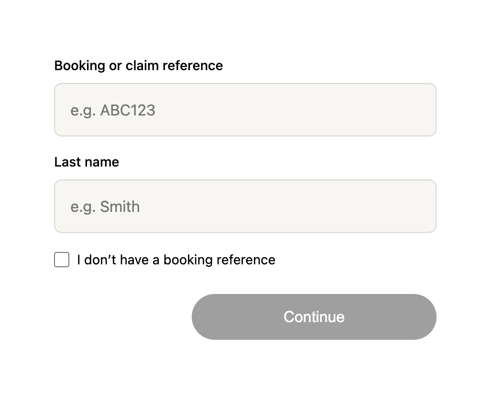
Verify every passenger
Each passenger included in a claim can be required to confirm their participation before the claim proceeds. This creates a clear audit trail, ensures compensation reaches legitimate claimants, and gives airlines full visibility into who is requesting compensation and on whose behalf. Also it gives airlines an opportunity to offer credits/miles before passengers commit to third-party claim agencies.
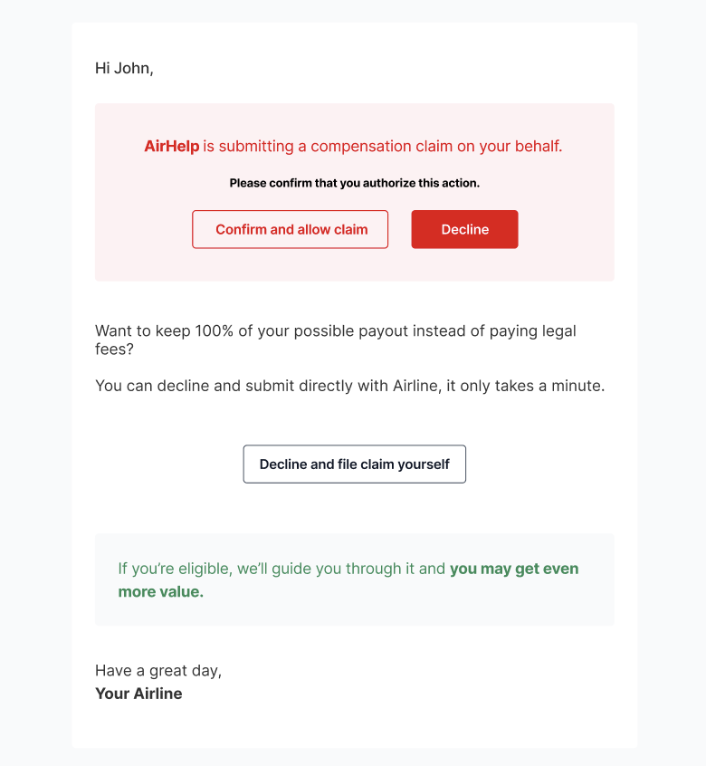
Intelligent claiming reduces errors and submissions
By combining flight and booking data with compensation rules, passengers receive instant feedback about their situation while filing a claim. This automatically adapts the process to each traveler and helps set expectations early, deters ineligible submissions, and significantly reduces the number of claims.
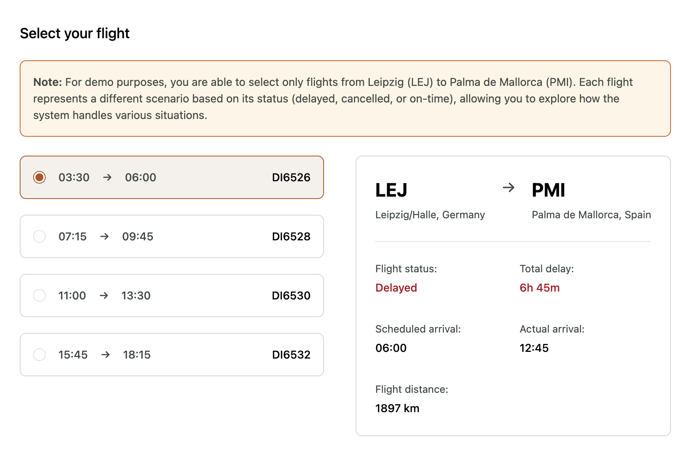
Let passengers be heard
Every claim includes an optional space for passengers to share their story in their own words. This gives travelers an opportunity to voice their frustrations and feel acknowledged, while providing airlines with direct insight into customer pain points, service failures, and operational issues that may not be captured through structured claim fields alone.
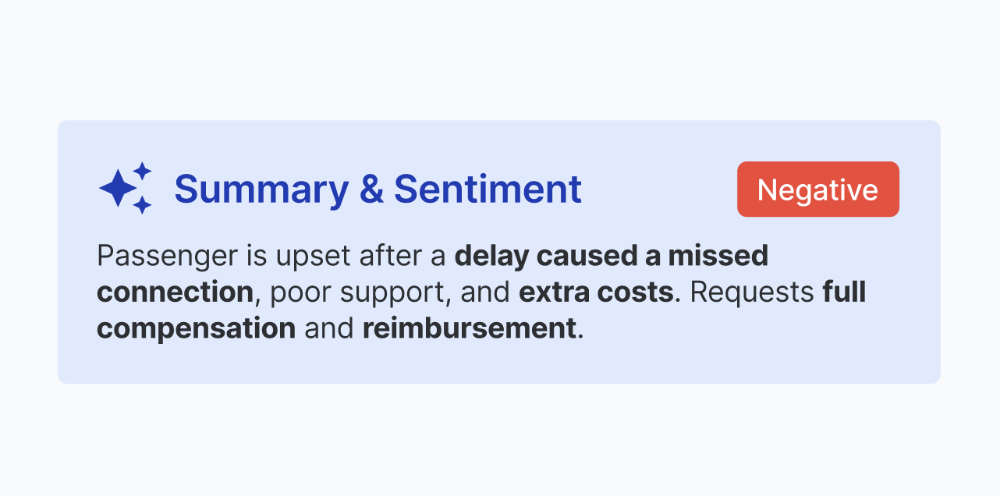
Guide passengers toward realistic compensation
Our platform helps passengers understand what compensation they may be entitled to before submitting a claim. When requested amounts differ significantly from expected compensation levels, passengers receive guidance about applicable regulations, supporting documentation requirements, and available alternatives, resulting in better-informed submissions and faster claim resolution.
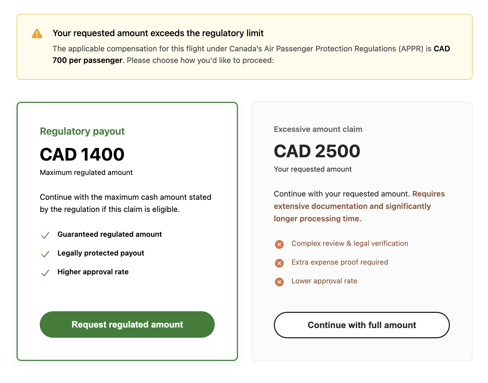
Keep passengers informed without increasing support workload
Our platform automatically communicates next steps, expected processing times, and claim status updates throughout the resolution journey. By giving passengers transparency and self-service access to information, airlines can significantly reduce avoidable customer support interactions while improving the overall claims experience.
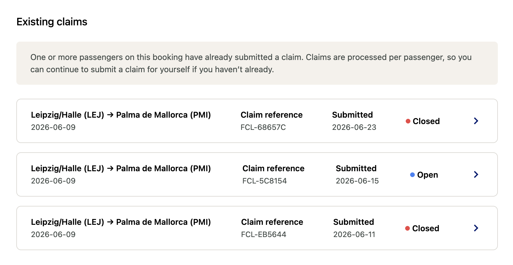
Smart compensation offers
Our platform enables personalized compensation offers throughout the claim and payout process. When appropriate, passengers can choose enhanced travel credits, vouchers, or loyalty rewards instead of cash compensation. This creates a win-win outcome, giving passengers greater perceived value while reducing compensation costs and encouraging future engagement with the airline.
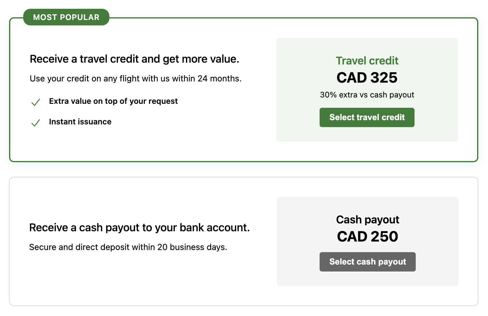
Retaining loyalty with goodwill offers
When a claim is not eligible for compensation, airlines can still choose to offer targeted goodwill benefits such as discount codes, travel vouchers, bonus miles, or future flight incentives. This helps preserve customer relationships, reduces dissatisfaction, and demonstrates a commitment to customer care even when regulatory compensation is not applicable.
Automated payment information collection
Our platform automatically requests and validates the payment information needed to process compensation. By collecting payout details at the right stage of the claim journey, airlines can avoid unnecessary back-and-forth communication and reduce processing delays.
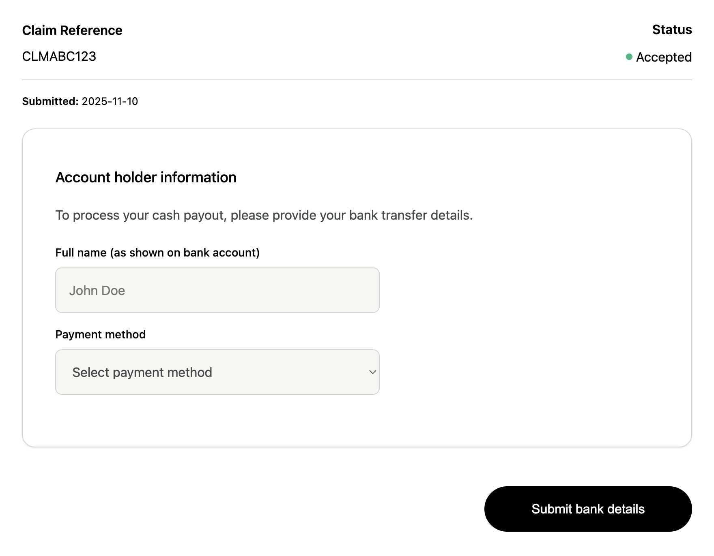
Automation & Agents
Deterministic workflows and AI assistance that handle the work — while airlines keep control of every decision.
End-to-end claims automation
Cura automates virtually the entire claims journey through configurable workflows tailored to each airline's processes. Airlines can automate end-to-end handling or only selected steps while keeping manual oversight where needed. Because workflows are configurable rather than custom-built, new automations can be introduced quickly.
Unlike systems that rely on AI to make decisions, Cura uses deterministic workflows based on airline policies, regulations, and business rules, so every claim is handled consistently, transparently, and compliantly. AI acts as an assistant, supporting tasks such as document reading, fraud detection, communication drafting, and data enrichment. Final decisions always remain governed by the airline.
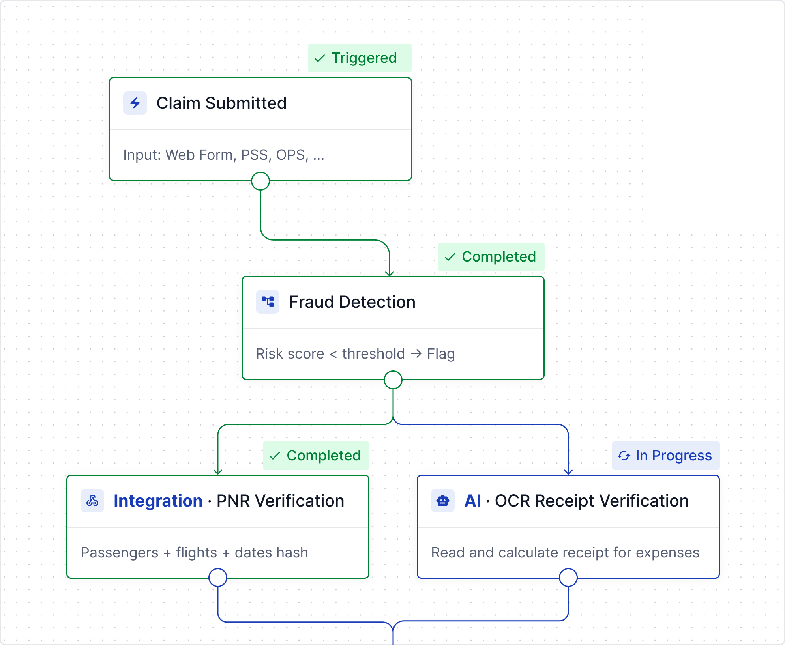
Purpose-built for airline claims and flight eligibility
Cura brings together passenger, booking, flight, disruption, communication, and document data into a single platform, eliminating the need to switch between PSS, operational systems, and external tools. Agents can investigate and resolve claims faster, while airlines benefit from greater consistency and productivity.
The platform also provides a centralized flight workspace where eligibility decisions can be assessed once at the flight level and automatically applied across related claims. By combining operational data, disruption context, decision history, and AI-supported recommendations in one place, Cura enables faster investigations, consistent outcomes, and a complete audit trail while keeping airlines fully in control of final decisions.
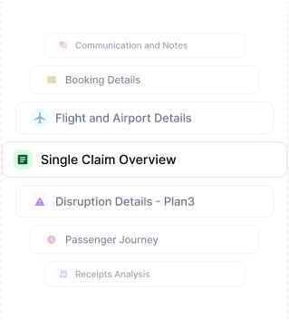
Automated regulatory and legal responses
When transportation authorities, courts, or legal representatives request information about a claim decision, Cura can automatically identify the request, gather the relevant evidence, and prepare a complete response package.
The platform consolidates claim history, passenger communications, operational data, booking information, disruption details, and decision records into a structured case file. Responses can be generated using airline-approved templates, AI-assisted drafting, or fully automated workflows, with optional agent review before submission.
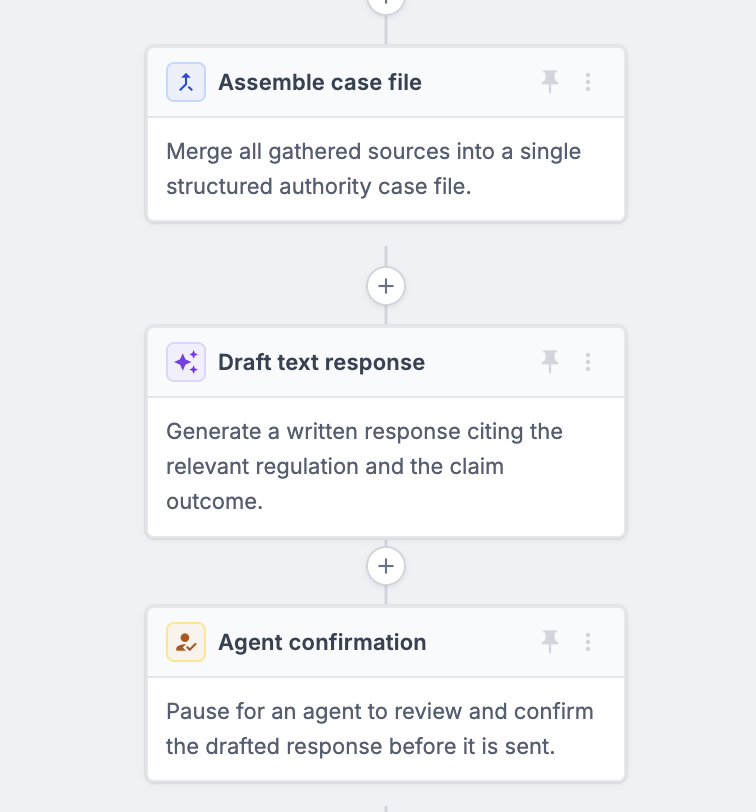
AI-powered claim assistance
Rather than making decisions, AI acts as an assistant that helps passengers, agents, and operational teams throughout the claims lifecycle.
AI can analyze receipts, invoices, documents, and baggage images, detect potential fraud, generate personalized communications, and provide claim recommendations based on available evidence and airline rules. Combined with configurable workflows, AI helps automate routine tasks while keeping airlines fully in control of decisions, compliance, and customer outcomes.
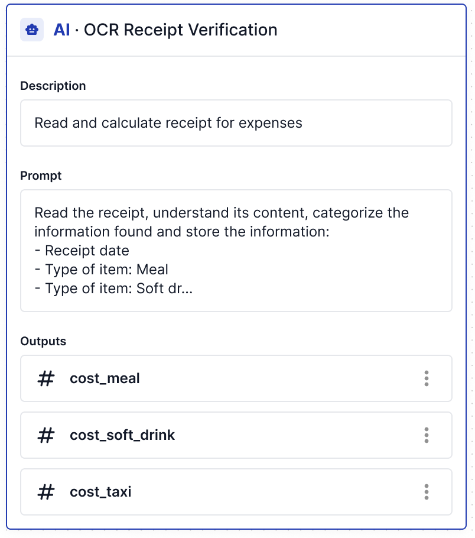
Monitor and act on customer sentiment
Cura monitors social media, review sites, and customer feedback channels to identify passenger concerns, service issues, and emerging reputation risks. AI automatically categorizes mentions, analyzes sentiment, and prioritizes cases based on urgency and impact.
Mentions can be linked to existing claims or converted into new ones, giving airlines a unified view of customer feedback and compensation activity. Teams can respond directly from the platform while gaining valuable insight into sentiment trends, disruption impact, and brand perception.
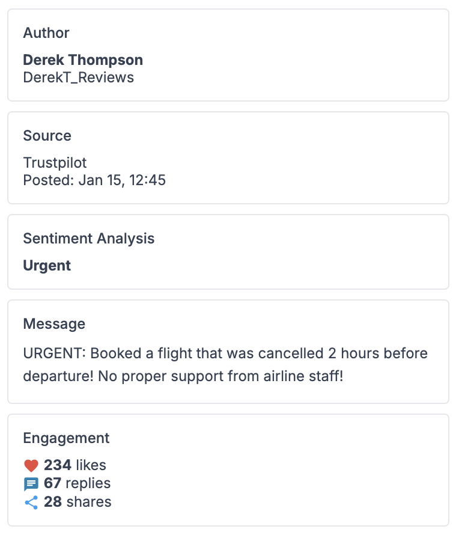
Turn claims data into operational insight
Cura provides airline-specific reporting across claims, operations, customer experience, and compensation costs. By combining the full claims lifecycle with operational and financial data, the platform delivers insights that are difficult to obtain from disconnected systems.
Teams can track claim volumes, processing performance, compensation costs, passenger behavior, and disruption trends while identifying opportunities to improve efficiency and reduce costs. AI-powered analytics help uncover patterns, detect anomalies, and recommend areas for operational improvement.
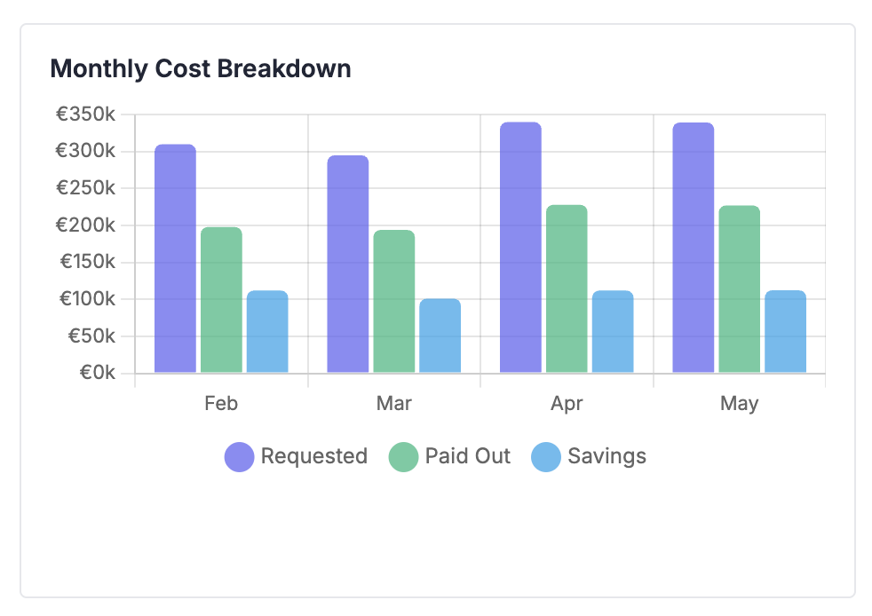
Automated disruption rights outreach
The EU's landmark reform of air passenger rights means airlines must reach out first — notifying every affected passenger electronically within 96 hours of a disrupted arrival. Cura's Disruption Rights Outreach turns that obligation into a workflow that runs itself: a daily scan reads each day's flights, identifies who is affected, and sends the right rights email well inside the window.
Because Cura reads why each flight was disrupted, every email tells passengers exactly where they stand — including an immediate heads-up when extraordinary circumstances such as weather or ATC mean no compensation is due. For those caught in the disruption but not owed compensation, airlines can attach a goodwill gesture like a discount on their next flight, staying compliant while protecting loyalty.
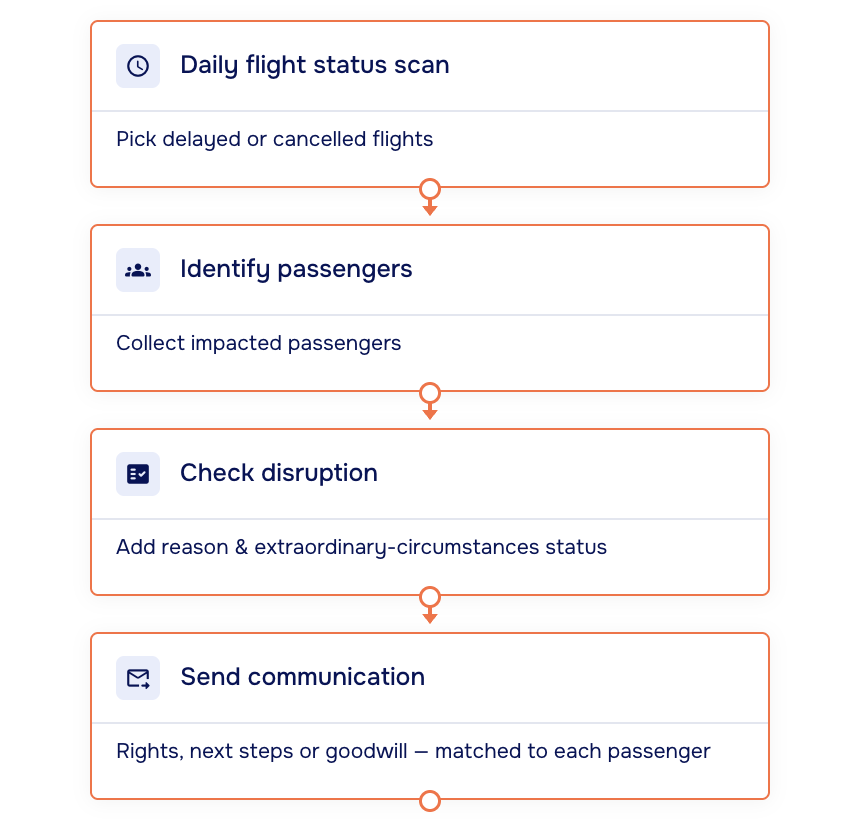